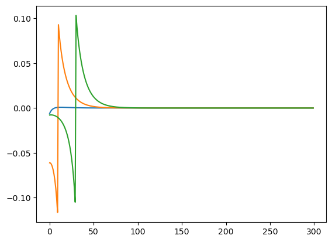
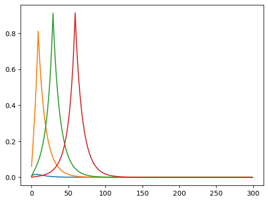
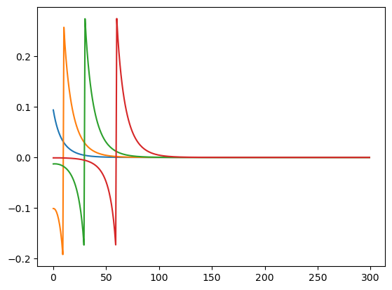
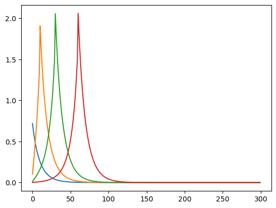
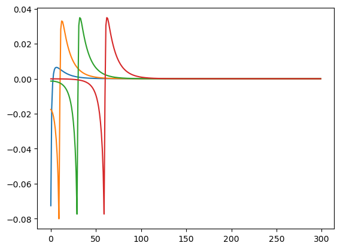
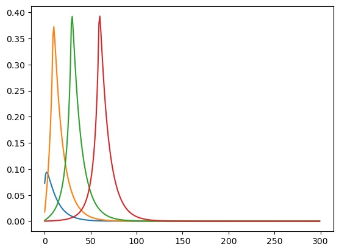

This page was generated from
examples/ConsNewKeynesianModel/Jacobian_Example.ipynb.
Interactive online version: .
Download notebook.
.
Download notebook.
Interactive online version:
Computing Heterogenous Agent Jacobians in HARK#
By William Du
This notebook illustrates how to compute Heterogenous Agent Jacobian matrices in HARK.
These matrices are a fundamental building building block to solving Heterogenous Agent New Keynesian Models with the sequence space jacobian methodology. For more information, see Auclert, Rognlie, Bardoszy, and Straub (2021)
For the IndShockConsumerType, Jacobians of Consumption and Saving can be computed with respect to the following parameters: LivPrb, PermShkStd,TranShkStd,UnempPrb, Rfree, IncUnemp.
[1]:
import time
import matplotlib.pyplot as plt
from HARK.ConsumptionSaving.ConsNewKeynesianModel import (
NewKeynesianConsumerType,
)
Create Agent#
[2]:
# Dictionary for Agent
Dict = {
# Solving Parameters
"aXtraMax": 1000,
"aXtraCount": 200,
# Transition Matrix Simulations Parameters
"mMax": 10000,
"mMin": 1e-6,
"mCount": 300,
"mFac": 3,
}
[3]:
Agent = NewKeynesianConsumerType(**Dict)
Compute Steady State#
[4]:
start = time.time()
Agent.compute_steady_state()
print("Seconds to compute steady state", time.time() - start)
Seconds to compute steady state 21.450182676315308
Compute Jacobians#
Shocks possible: LivPrb, PermShkStd,TranShkStd, DiscFac,UnempPrb, Rfree, IncUnemp
Shock to Standard Deviation to Permanent Income Shocks#
[5]:
start = time.time()
CJAC_Perm, AJAC_Perm = Agent.calc_jacobian("PermShkStd", 300)
print("Seconds to calculate Jacobian", time.time() - start)
Seconds to calculate Jacobian 12.027279376983643
Consumption Jacobians#
[6]:
plt.plot(CJAC_Perm.T[0])
plt.plot(CJAC_Perm.T[10])
plt.plot(CJAC_Perm.T[30])
plt.show()

Asset Jacobians#
[7]:
plt.plot(AJAC_Perm.T[0])
plt.plot(AJAC_Perm.T[10])
plt.plot(AJAC_Perm.T[30])
plt.plot(AJAC_Perm.T[60])
plt.show()

Shock to Real Interest Rate#
[8]:
CJAC_Rfree, AJAC_Rfree = Agent.calc_jacobian("Rfree", 300)
Consumption Jacobians#
[9]:
plt.plot(CJAC_Rfree.T[0])
plt.plot(CJAC_Rfree.T[10])
plt.plot(CJAC_Rfree.T[30])
plt.plot(CJAC_Rfree.T[60])
plt.show()

Asset Jacobians#
[10]:
plt.plot(AJAC_Rfree.T[0])
plt.plot(AJAC_Rfree.T[10])
plt.plot(AJAC_Rfree.T[30])
plt.plot(AJAC_Rfree.T[60])
plt.show()

Shock to Unemployment Probability#
[11]:
CJAC_UnempPrb, AJAC_UnempPrb = Agent.calc_jacobian("UnempPrb", 300)
[12]:
plt.plot(CJAC_UnempPrb.T[0])
plt.plot(CJAC_UnempPrb.T[10])
plt.plot(CJAC_UnempPrb.T[30])
plt.plot(CJAC_UnempPrb.T[60])
plt.show()

[13]:
plt.plot(AJAC_UnempPrb.T[0])
plt.plot(AJAC_UnempPrb.T[10])
plt.plot(AJAC_UnempPrb.T[30])
plt.plot(AJAC_UnempPrb.T[60])
plt.show()

[ ]: